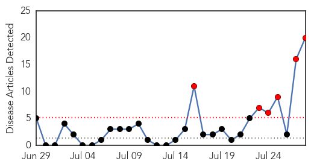

Hepatitis
30-Day Web Trend
6 alerts, 0 warnings

30-Day Twitter Trend
0 alerts, 0 warnings

Article Locations

Article Confidences
Top Articles:
- 0.946
- Creating Awareness for Effective Prevention of Hepatitis C - Dumb Out
- 0.939
- 'Poor treatment for hepatitis C infection in UK'
- 0.915
- Hepatitis E found in the blood of donors
- 0.907
- What you need to know
- 0.903
- Observing World Hepatitis Day on Monday
- 0.885
- VIRAL HEPATITIS, THE SILENT KILLER
- 0.854
- Should donor blood be screened for hepatitis E?
- 0.827
- HIV model can beat hepatitis
- 0.804
- Phase 2 COSMOS Study Results Published in The Lancet Demonstrate Efficacy and Safety of Janssen’s Once-Daily Simeprevir in All Oral 12-Week Combination with Sofosbuvir for Genotype 1 Chronic Hepatitis
- 0.763
- The Assam Tribune Online
- 0.758
- Hepatitis: increasing access to diagnosis and treatment could save millions of lives in the Americas - World
- 0.701
- Marking World Hepatitis Day, UN appeals for boost in global momentum to tackle disease
- 0.684
- UK hep C hospital admissions, transplants, and deaths have all risen
- 0.633
- 'Need to create awareness about Hepatitis B and C'
- 0.628
- World Hepatitis Day: Lack of health care strategy a 'national scandal,' doctor says
- 0.625
- Why So Few Hepatitis C Patients Get Access to "Miracle Drug" Treatments
- 0.596
- British PM calls for more awareness of Hepatitis C on World Hepatitis Day
- 0.582
- Devolution woes: On World Hepatitis Day, no treatment available
- 0.538
- 10 labs to be set up for testing viral Hepatitis
- 0.504
- New oral drug regimens cure hardest-to-treat hepatitis C
Top Tweets:
-
No tweets found for Jul 28, 2014